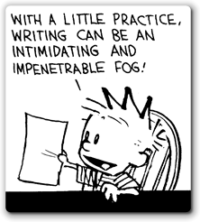
What do you do when you want to calculate a value, and Java just doesn't have the function that you need? Well, you write your own of course. That's the skill you'll now. As you probably remember from earlier, that many methods produce,
or return, a value instead of, or in addition to,
performing an action. For instance, the all of the
Math methods return information to
your program, rather than doing something to your
program, like the println() method does.
We informally or generically can call these kinds of "value-producing" methods functions, and we call the "perform an action" methods procedures. The most important difference between these two kinds of methods is:
A procedure represents a series of statements
A function represents a value
Defining Functions
You've already learned how to use or call such value-producing methods, but how do you define them? Fortunately, it's not difficult. Functions vary in only two particulars from their action-oriented procedural cousins:
- functions have a return type other than
void - functions must terminate by using a return expression
The basic structure for defining a function looks like this:
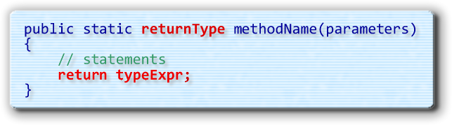
Notice that the basic definition is almost identical to the procedure definitions you wrote previously, except for two things:- Instead of using the keyword
voidas the return type, functions always have a specific type listed as the return type. This can beint,double,boolean,String, or, really, any type at all, as long as it is notvoid. - The second difference is the return expression.
Every function must end with a
returnstatement that includes an expression of the same type as the return type specified in the heading. If the function returns adouble, then you could end it withreturn 2.0;. If a function returned anint, though, the value following the return expression would have to be anintexpression.
Remember: the return type specified in the function header, and the return expression that ends the function, both must be the same type of values.
The static modifier in the procedure or
function heading is only needed if you want to
call your method from the main() function.
The monthlyPayment() Function
To help you understand how the return statement works,
let's rewrite our
example from the last section as a function named
monthlyPayment().
To create the function, just follow these two steps:
-
Write the Heading:
You first have to decide what kind of
value the method will return, and what kind of parameters
it will need. Like the
printLoanData()procedure, themonthlyPayment()function will need three formal parameters. Unlike the procedure, though, the function will return adouble, instead of using the wordvoid. Here's the difference in the two headers:
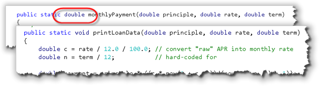
-
Return the Value:
Inside the method, perform any calculations that are needed to
determine "the answer", and then use a
returnexpression to end the method. FormonthlyPayment(), the code is exactly likeprintLoanData(), except that instead of printing the value, it is returned instead:
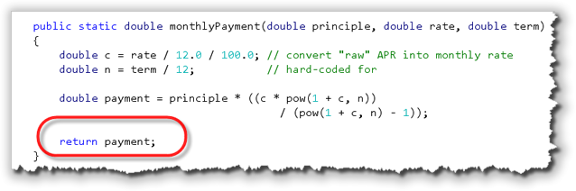
Alternative Return Syntax
Since we make no further use of the variable payment returned
from the monthlyPayment() function, it's common to
simply make the calculation part of the return expression and
shorted the method like this:

Return Caveats
There are two things you have to watch out for when using the
return statement. (These examples are shown in
the Eclipse IDE. In DrJava, you'll see these errors when you compile.)
- First, the expression that you return, must be the same type
(or convertible to that type) as the return type listed in the function
header. This, for instance, would be an error:
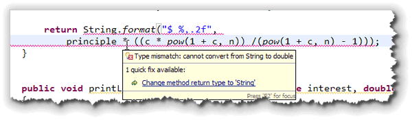
because the method header says that it returns adouble, but the actual value returned is aString. - Second, a
returnstatement is a special flow of control that immediately ends the function. That means you can't have any other statements after areturnstatement. This, for instance produces an error:
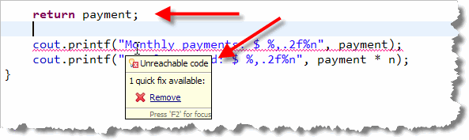
because theprintln()statements can never be reached; the function has already returned.
Actually, when we learn about the if statement,
you'll see that a function can have several
return statements, as long as each and every path through
the code leads to exactly one return. Even then, your
code will be clearer if you have only one return
statement.
Calling the Function
To call the monthlyPayment() function, we have
four options:
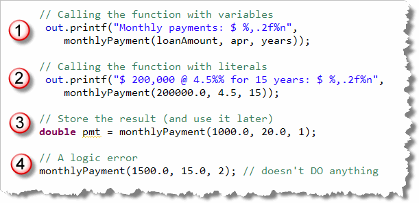
- You can pass variables to the function and then
immediately pass the returned value, produced by calling the
function, to another procedure or function. In the example
shown here, I'm passing the returned value to the
printf()procedure. - You can pass literals as the actual parameters when you call the function. The second example is almost identical to the first, except that literals are passed instead of variables.
- You can call the function and save the value you get back in a variable for later use, by using the assignment statement.
- Finally, you can call the function just like you would call a procedure, that is, as a statement. While this is not a syntax error, it is always a logic error, since the code has no effect in your program.
Documenting Procedures and Functions
Whenever you write a procedure or function, you should provide documentation, so that those who call your method know what each formal parameter stands for, and what the returned value of any function represents.
To do this, you'll use Java documentation comments that begin
with the sequence /** (slash-star-star) and end with a
*/ (star-slash) just like a plain multi-line comment.
In between, you'll use special documentation tags that can
be interpreted by the Javadoc utility.
You can look up the syntax for these
special JavaDoc tags online.
In DrJava, start a Javadoc function or procedure comment
by typing the starting code(/**), putting in a couple of blank lines
and then hitting the ending code (*/). You can then
go back and add new lines and DrJava will
automatically put a * at the beginning of each line.
Make sure, though, when you end the comment block, you backspace
so there isn't a space between the * and the /.
If the code following your comment is colored green, that means your
closing comment symbol isn't typed correctly.
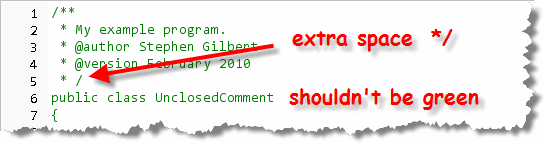
To finish the documentation comment for a method, just:
- Provide a single sentence that describes what the function does. After this sentence (which must end in a period) you have supply more information on how the function or procedure would be used if you like.
- For every formal parameter, add an
@paramtag which describes what the parameter represents. - Finally, if you are writing a function, add a @return tag describing what the value returned by the function represents.
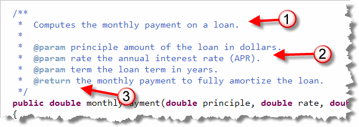
A String Function Interlude
Before you start working on your own user-defined functions,
I want to revisit the String class, and the
functions found there. In the last chapter, you learned how
to use the length() function to find out how
many characters were in a String, and how to
use some builder methods, like
toUpperCase() and replace().
Now, I want you to learn how to use a searching
function, named indexOf() and two more
builder methods: charAt() which
retrieves individual characters from a String
based on their position, and substring(), which makes
a new, smaller String out of an existing
String.
I like to think of substring()
as an enhanced version of charAt(), since
it allows me to retrieve a portion of an existing String,
and use that to create a new variable.
Retrieving Characters
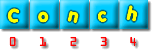
If you were to "peer inside" theString object
referred to by the variable s1, you'd see that
the individual characters were stored right next to each
other in memory. Because of this, Java lets you access
the individual characters using an index value.
Most other languages use a similar scheme, but some languages
start their counting at 1, (VB and Pascal), and others
start their counting at 0, (Java and C++).
As you can see from the picture shown here, the first
character in a Java String, like the capital
"C" in "Conch", is associated with the index position 0.
To retrieve the individual characters that make up a
String, use the charAt(int position)
method. Pass your variable the index position of the character
you want, and the charAt() method return the
character itself.
There are two things you should note. First,
the value returned from charAt() is a char,
not a 1-character String. If you want to use the
returned value with other strings, you'll have to use concatenation
to convert it back into a String object.
Second, the last character in any Java String will
always be at position length() - 1. It is up to you to
make sure you don't try to use an index value larger than that.
Here are a couple examples. Assume that s1 and
s2 from the previous example are still in scope:
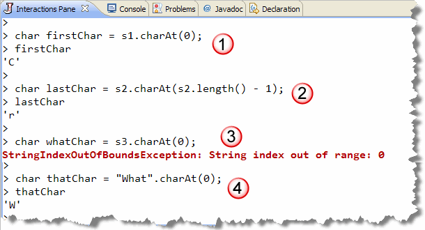
- Line 1 stores the character 'C' in the variable
firstChar. - Line 2 uses
charAt()to retrieve the last character in "fritters", and then stores it in thecharvariablelastChar. Note thatlength()-1is used as the index value passed tocharAt(). - Line 3 causes a runtime error since the empty
Stringdoes not have a character at position 0. - Line 4 stores the character 'W' in the variable
thatChar. Note that you can call methods usingStringliterals as the receiver. In this case, theStringliteral"What"is passed as the invisible, implicit parameter to thecharAt()method.
Searching Methods: indexOf, lastIndexOf
The charAt() method is useful when you know
the position of a particular value. Often, though, with
user-supplied data, you'll need to search through the
string to find the position of the value you want.
The String class has several methods that will
let you search for the positions of specific values.
There are several versions of each of these
methods, which search the String on the left,
(the one calling the method), for the value on the right,
(the parameter passed to the method). The parameter can
be either a character or a String.
The indexOf() methods start searching at the
beginning of the String, and the
lastIndexOf() methods start searching at the
end
of the String. Both methods return the index
position, measured from the beginning of the string,
where the searched-for value was found. Both methods also
return -1 if the character or String searched for is
not found.
Here are some examples, along with the analysis:
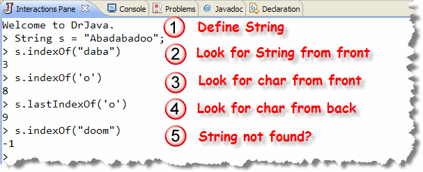
- Stores the address of the literal "Abadabadoo" in the variable
s. - Uses
indexOf()to retrieve the index position of the word"daba"contained insides. Since the first character is at position 0, you can see that the phrase starts at position 3 which is displayed in the DrJava console. - Uses the
indexOf()method, only this time the method searches for acharparameter, not aString. "Abadabadoo" contains the character 'o' twice, in positions 8 and 9. TheindexOf()method returns the position of the first match it finds, searching from the front of theString.This is actually a different version of the
indexOf()method than that used in Line 2, since each method has to specify what kind of parameters it requires. That means a method cannot be written so that a user can provide either aStringor achar. To get the same effect, programmers can write different versions of the same method, using the same name. Different versions of a method, using the same name but requiring different parameters, are known as overloaded methods. - Searches for the character 'o', but this time a
version of the
lastIndexOf()method is used. As its name suggests, this method starts searching from the end of theStringuntil it finds a match. Since it finds the character 'o' immediately at the end of the string, it returns its position, 9, which is stored in the variablep3.Note that even though the searching starts at the back or end of the
String, the value returned when the item is located is its position from the beginning of theString. - Searches the
Abadabadoofor the word "doom". Since doom occurs nowhere in the string, the value returned from the function is -1.
substring(start), substring(start, end)
The last method we're going to look at is one that you'll use
often in your assignments in the upcoming weeks, and one
you'll find useful in a variety of situations (including exams).
The substring() method, which has two overloaded versions,
returns a portion of the String used to call the
method.
The returned String starts with the element
passed as start, with the first element being 0.
The second version returns the portion of the String
starting (and including) position start, up to, and
excluding, position end.
Here's an example:
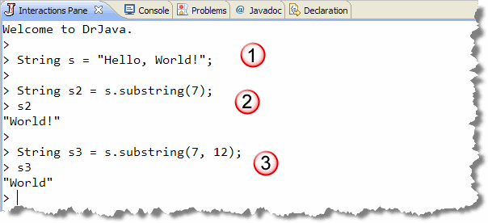
 The snippet creates the
The snippet creates the Stringvariablesand assigns it to the literal "Hello World!".- Section 2 uses the
substring()method to extract the portion of1starting with the character at position 7, and continuing up to the end of the originalStrings. - Section 3 uses the second, overloaded version of
substring()to extract the portion ofsstarting at position 7, and going up to, but not including, the character at position 12.
The fact that you need to supply two index values (instead of an initial index and then a length), is a little awkward. One nice thing, though, is that you can easily use the two index values to compute the length of the substring, by subtracting the starting index from the ending index. If you want to extract a substring of a particular size, just do it like this:
String s4 = s1.substring(7, 7+5); // World